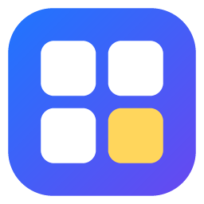

PowerKit
Windows power-user utilities, in one small background process.
Windows 10 and 11 · one portable .exe · MIT license
Utilities
FancyZones
Snap windows into custom zone layouts. Drag with Shift held, or send a window by keyboard.
Win+Ctrl+Alt+←/→, Win+Ctrl+Alt+1…9PowerKit Run
A launcher for apps, files, calculations and commands.
Alt+SpaceKeyboard Manager
Remap keys and shortcuts, everywhere or only in chosen apps.
Color Picker
Pick any color on screen and copy it as HEX, RGB, HSL and more.
Win+Shift+CPowerRename
Bulk rename with search and replace, regular expressions, case changes and numbering, with a live preview and undo.
Always On Top
Pin a window above all others, with a colored border.
Win+Ctrl+TAwake
Keep the PC awake indefinitely, for a while, or until a set time.
Light Switch
Switch between light and dark mode on a schedule or by shortcut.
Win+Ctrl+Shift+DQuick Accent
Hold a letter, then press Space or an arrow key to type é, ñ, ß…
Mouse utilities
Find My Mouse, a click highlighter, crosshairs with a gliding cursor, and Mouse Jump.
Ctrl ×2, Win+Shift+H, Win+Alt+P, Win+Shift+DCrop and Lock
Crop a window into a live thumbnail, or into a smaller window that still takes input.
Win+Ctrl+Shift+T, Win+Ctrl+Shift+RShortcut Guide
Hold the Windows key to see the shortcuts for Windows, PowerKit and the focused app, with numbers on the taskbar buttons.
Win, or Win+Shift+/Grab and Move
Hold Win (or Alt) and drag anywhere in a window to move it; drag with the right button to resize it.
Win + dragWindow Hopper
Switch between the windows of the focused app, including minimized ones.
Alt+ `, Alt+Shift+ ``Hosts File Editor
Add, change, turn off and delete hosts file entries, with duplicates flagged. Saving asks for administrator permission and keeps a backup.
powerkit --hostsEnvironment Variables
View, add, change and delete user and system variables, with unsaved changes marked. System changes ask for administrator permission; running programs are told about the change.
powerkit --envRegistry Preview
Open or type a .reg file and see the keys and values it would write, with problems shown by line. Save it, write it to the registry (administrator permission only when it touches keys outside HKEY_CURRENT_USER), or jump to a key in Registry Editor.
powerkit --reg [FILE]New+
Right-click a folder or a folder's background and choose New+ to create a file or folder from your own templates. Leading numbers order the menu and can be hidden; $YYYY, $MM, $PARENT_FOLDER_NAME, %USERNAME% and other variables can fill in the new name.
powerkit --new FOLDERFile Locksmith
Right-click files or folders and choose Unlock with PowerKit to see every process that has them open, including anything inside the folders. Select one and choose End task to close it. The entry can be limited to the Shift + right-click menu.
powerkit --unlock P…Image Resizer
Right-click pictures and choose Resize with PowerKit, then pick a saved size or type one in pixels, percent, centimeters or inches. Fit, fill (cropping the middle) or stretch; save copies named from a pattern like %1 (%2) or replace the originals; never enlarge, keep metadata and dates, set the JPEG quality. Pictures Windows can read but not write, such as HEIC and WebP, are saved as JPEG or another format you choose.
powerkit --resize P…Text Extractor
Drag a box over any part of the screen and the text in it is read by the OCR built into Windows and copied, line by line or as one line. Reads the Windows display languages, or any language you name whose OCR is installed.
Win+Shift+TGetting started
1. Download powerkit.exe and run it. PowerKit lives in the notification area.
2. Click the tray icon to open settings. Each utility has a short animated walkthrough above its settings, drawn with your own shortcuts.
3. PowerKit checks for a new release once a day. Choose Install update in the tray menu and it updates itself and restarts.
To keep settings next to the program, put an empty file named portable beside powerkit.exe.